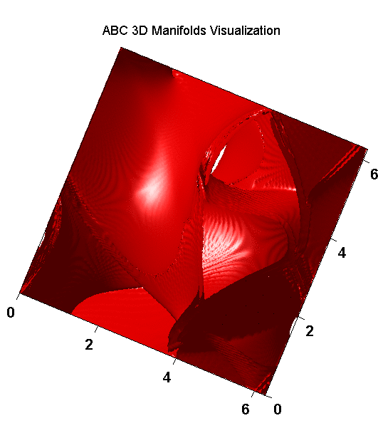

Transport and Mixing in Idealized 3D flow Models: (work with: H. Huntley, B. Lipphardt, A.D. Kirwan):
-
3D Lagrangian Coherent Structures (LCS) in
ABC flow:
- The steady ABC flow is defined by the equations:
- u = A sin(z) + C cos(y),
- v = B sin(x) + A cos(z),
- w = C sin(y) + B cos(x).
- Case I: T = 10, A varies from A = 0.1,
to A = 1.1, and B = C = 0.8 fixed.:
- Case II: T = 10, A varies from A = 0.1,
to A = 1.1, and B = C = 0.1 fixed.:
- Case III: T = 10, A varies from A = 0.1,
to A = 1.1, and B = C = 0.5 fixed.
- Case IV: T = 50, A varies from A = 0.1,
to A=1.1, and B=C=0.1:
- Case V: A is fixed while B = C changes from 0.1 to 1.1: A = 0.1,
B = C varies from B = C= 0.1 to B = C = 1.1.

3D Lagrangian Coherent Structures LCSs in quadrupole-type flows:
- The steady quadrupole flow:
- u = -[(π/Ly) A + (π/Lx)Bz] sin(πx/Lx) cos(πy/Ly)
- v = [(π/Lx) A - (π/Ly)Bz] cos(πx/Lx)sin(πy/Ly)
- w = π2[Lx-2 + Ly -2]B cos(πx/Lx) cos(πy/Ly)
- 3D vs 2D Finite-time Lyapunov Exponents (FTLEs): Three cases have been studied